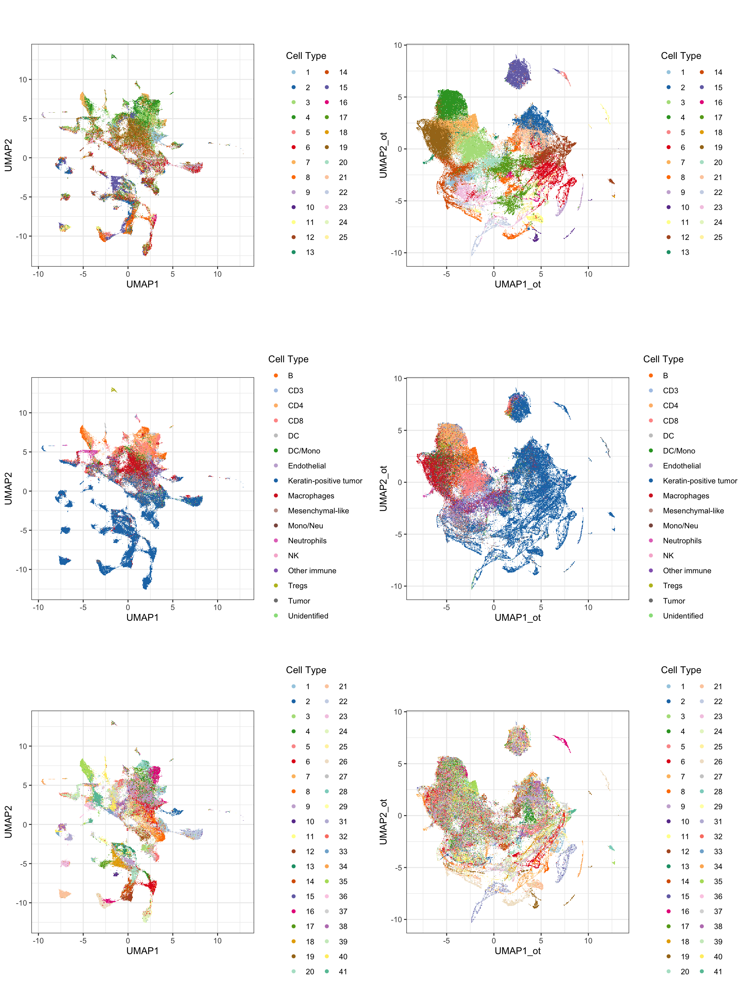
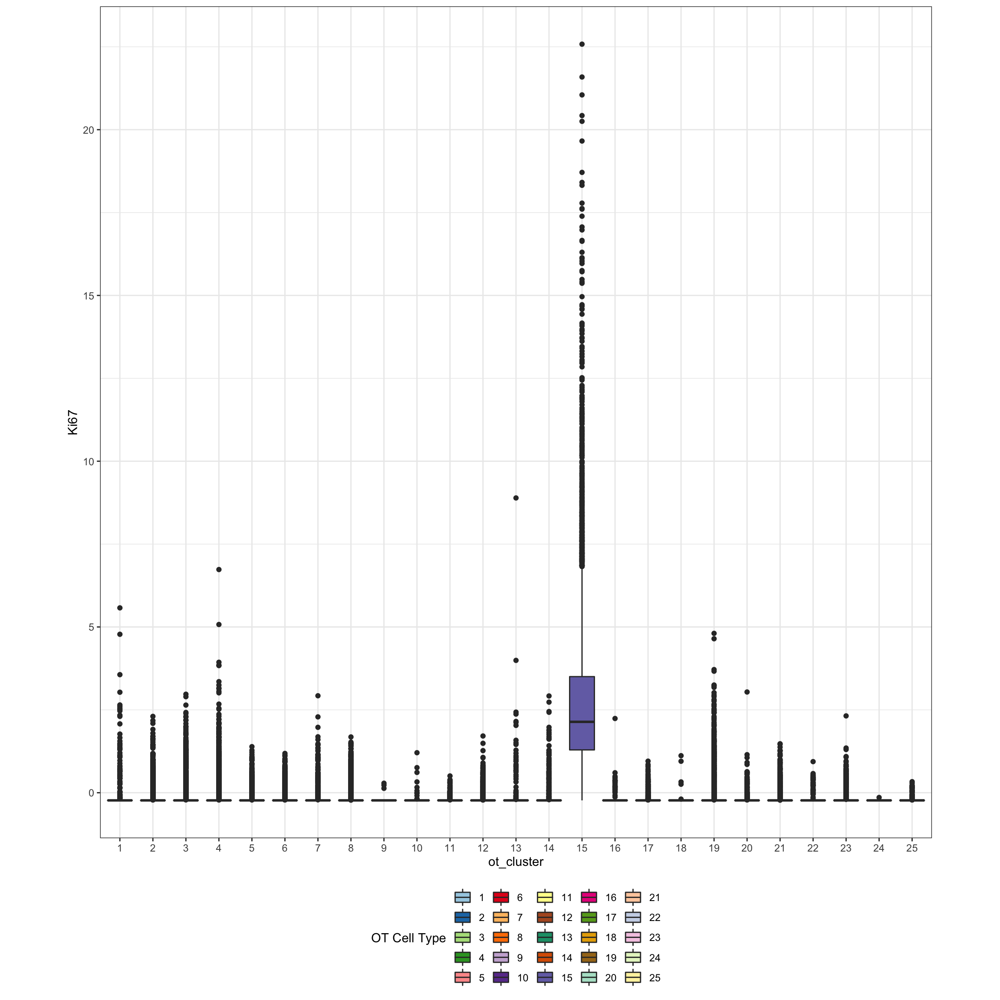
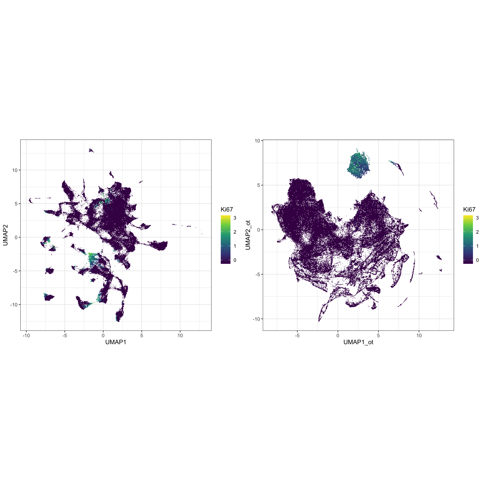
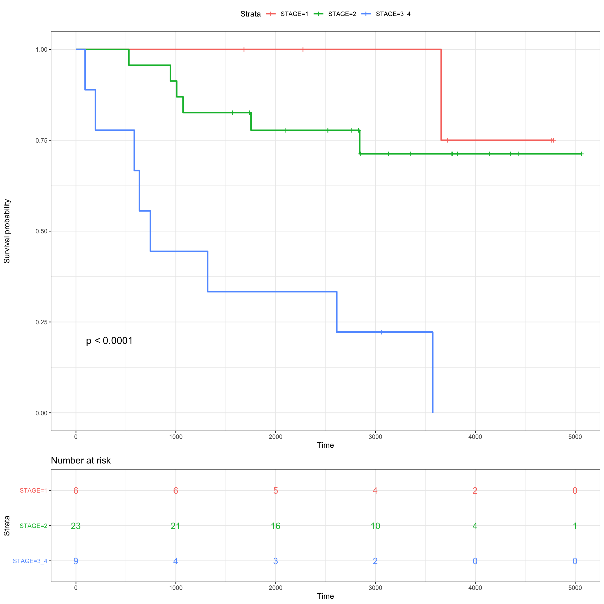
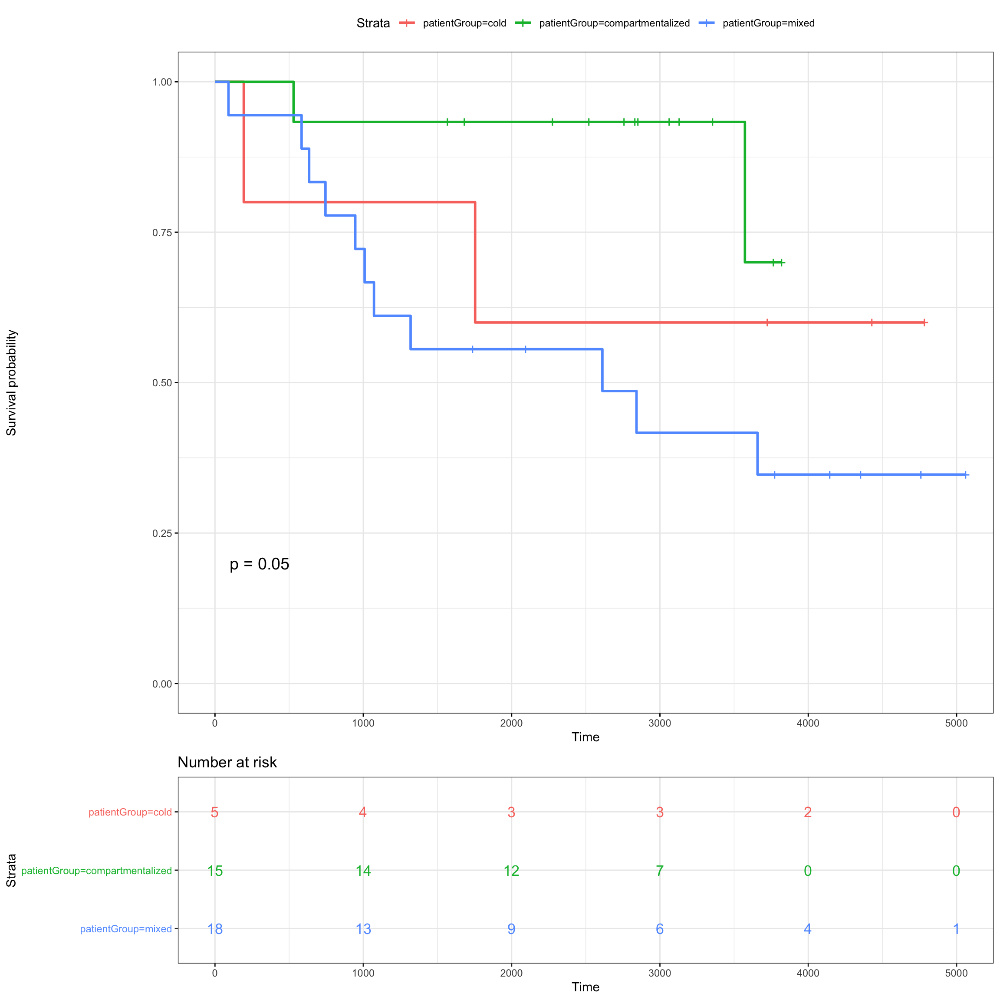
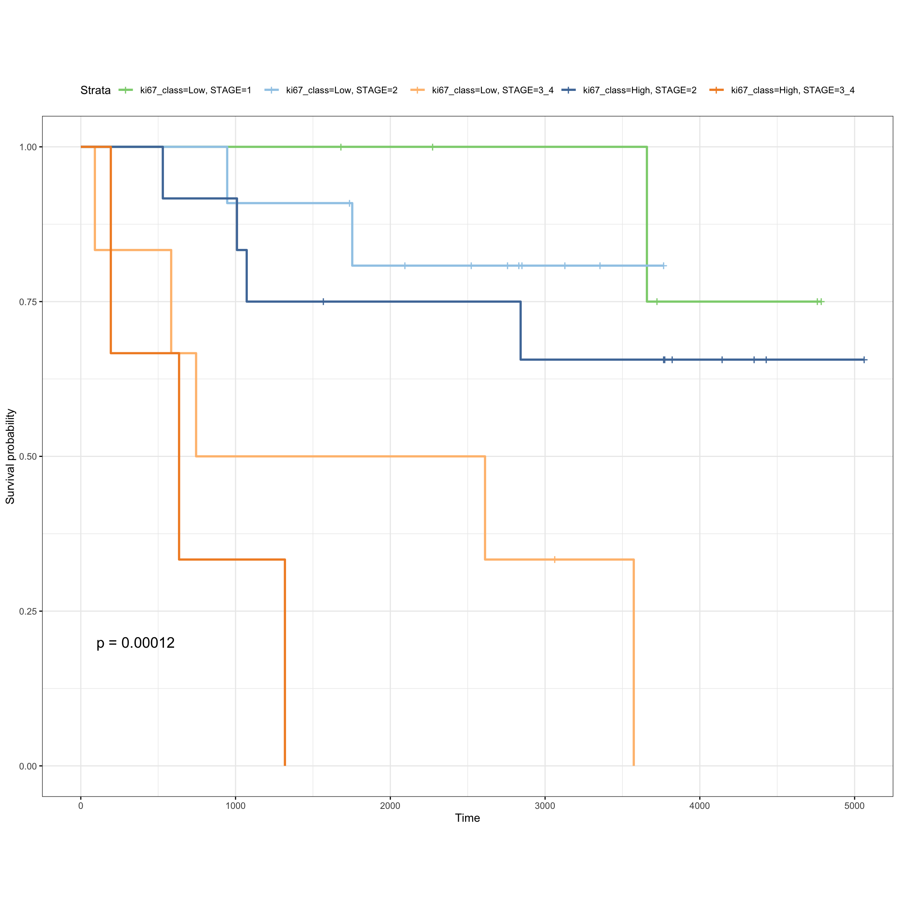

library(raster)
library(SingleCellExperiment)
library(scater)
library(plyr)
library(ggplot2)
library(pheatmap)
library(ggthemes)
library(RColorBrewer)
library(spatstat)
library(gridExtra)
library(ggpubr)
library(spatstat)
source("functions/image_analysis_function.R")mibi.sce <- readRDS("../../sc-targeted-proteomics/data/mibi.sce_withDR.rds")
colnames(mibi.sce) <- paste(mibi.sce$SampleID, mibi.sce$cellLabelInImage, sep = "_")
mibi.sce$cellTypes <- ifelse(as.character(mibi.sce$immune_group) != "not immune",
as.character(mibi.sce$immune_group),
as.character(mibi.sce$tumor_group))
mibi.sce$cellTypes_group <- ifelse(as.character(mibi.sce$immune_group) != "not immune",
"Micro-environment",
"Tumour")
selected_chanel_mibi <- rownames(mibi.sce)[rowData(mibi.sce)$is_protein == 1]
tiff_name_list <- list.files("../../sc-targeted-proteomics/data/TNBC_shareCellData/", pattern = ".tiff")
tiff_name_list <- tiff_name_list[-24]# color for mibi cell types
cellTypes_group_mibi_color <- tableau_color_pal("Tableau 10")(length(unique(mibi.sce$cellTypes_group)))
cellTypes_group_mibi_color <- c(cellTypes_group_mibi_color, "black")
names(cellTypes_group_mibi_color) <- c(unique(mibi.sce$cellTypes_group), "Background")
cellTypes_mibi_color <- tableau_color_pal("Classic 20")(length(unique(mibi.sce$cellTypes)))
cellTypes_mibi_color <- c(cellTypes_mibi_color, "black")
names(cellTypes_mibi_color) <- c(unique(mibi.sce$cellTypes), "Background")common_protein <- c("CD3", "CD68", "HLA-DR", "CD45")
ot_rbind_list <- list()
for (s in 1:length(tiff_name_list)) {
str_name <- paste("../../sc-targeted-proteomics/data/TNBC_shareCellData/", tiff_name_list[s], sep = "")
sample_id <- as.numeric(gsub("p", "", gsub("_labeledcellData.tiff", "", tiff_name_list[s])))
print(sample_id)
p_sce <- mibi.sce[, mibi.sce$SampleID == sample_id]
p_sce <- p_sce[rowData(p_sce)$is_protein == 1, ]
exprsMat <- assay(p_sce, "mibi_exprs")
# Optimal transport results
epith_ot <- read.csv(paste0("../../sc-targeted-proteomics/OT/data/mibi_exprs_ot_pred_mat_epith/pred_res_mat_all_patient_", sample_id, ".csv"), row.names = 1)
epith_ot <- as.matrix(epith_ot)
tcells_ot <- read.csv(paste0("../../sc-targeted-proteomics/OT/data/mibi_exprs_ot_pred_mat_tcells/pred_res_mat_all_patient_", sample_id, ".csv"), row.names = 1)
tcells_ot <- as.matrix(tcells_ot)
rownames(epith_ot)[rownames(epith_ot) == "HLADR"] <- "HLA-DR"
rownames(tcells_ot)[rownames(tcells_ot) == "HLADR"] <- "HLA-DR"
ot_rbind <- rbind((epith_ot),
(tcells_ot[!rownames(tcells_ot) %in% common_protein,]))
ot_rbind <- t(apply(ot_rbind, 1, scale))
colnames(ot_rbind) <- colnames(exprsMat)
ot_rbind_list[[s]] <- ot_rbind
}
ot_rbind_list <- do.call(cbind, ot_rbind_list)
saveRDS(ot_rbind_list, "output/mibi_ot_all.rds")ot_rbind_list <- readRDS("output/mibi_ot_all.rds")
mibi.sce_filtered <- mibi.sce[, colnames(ot_rbind_list)]
altExp(mibi.sce_filtered, "OT") <- SummarizedExperiment(list(exprs = ot_rbind_list))
mibi.sce_filtered <- scater::runPCA(mibi.sce_filtered,
altexp = "OT",
ncomponents = 20,
exprs_values = "exprs", name = "OT_PCA")
set.seed(2020)
mibi.sce_filtered <- scater::runUMAP(mibi.sce_filtered,
altexp = "OT",
exprs_values = "exprs",
pca = 20,
scale = FALSE,
n_neighbors = 20,
name = "OT_UMAP")
# g <- scran::buildKNNGraph(mibi.sce_filtered, k = 50, use.dimred = "OT_PCA")
# clust <- igraph::cluster_louvain(g)$membership
# table(clust)
g <- scran::buildKNNGraph(mibi.sce_filtered, k = 50, use.dimred = "OT_PCA")
clust <- igraph::cluster_louvain(g)$membership
table(clust)## clust
## 1 2 3 4 5 6 7 8 9 10 11 12 13
## 4110 12520 16729 18822 1002 11641 11937 8758 1874 1541 3846 11122 1967
## 14 15 16 17 18 19 20 21 22 23 24 25
## 9738 13221 1327 13087 422 22752 6523 8367 3470 8181 722 3999mibi.sce_filtered$ot_cluster <- as.factor(clust)df_toPlot <- data.frame(colData(mibi.sce_filtered))
cellTypes_color_cluster <- c(RColorBrewer::brewer.pal(12, "Paired"),
RColorBrewer::brewer.pal(7, "Dark2"),
RColorBrewer::brewer.pal(8, "Pastel2"),
RColorBrewer::brewer.pal(12, "Set3"),
RColorBrewer::brewer.pal(8, "Set2"))
umap_mibi <- reducedDim(mibi.sce_filtered, "OT_UMAP")
df_toPlot$UMAP1_ot <- umap_mibi[, 1]
df_toPlot$UMAP2_ot <- umap_mibi[, 2]
umap <- reducedDim(mibi.sce_filtered, "UMAP")
df_toPlot$UMAP1 <- umap[, 1]
df_toPlot$UMAP2 <- umap[, 2]
library(scattermore)
g1 <- ggplot(df_toPlot, aes(x = UMAP1, y = UMAP2, color = ot_cluster)) +
geom_scattermore() +
theme_bw() +
theme(aspect.ratio = 1) +
scale_color_manual(values = cellTypes_color_cluster) +
labs(color = "Cell Type")
g2 <- ggplot(df_toPlot, aes(x = UMAP1, y = UMAP2, color = cellTypes)) +
geom_scattermore() +
theme_bw() +
theme(aspect.ratio = 1) +
scale_color_manual(values = cellTypes_mibi_color) +
labs(color = "Cell Type")
g3 <- ggplot(df_toPlot, aes(x = UMAP1, y = UMAP2, color = factor(SampleID))) +
geom_scattermore() +
theme_bw() +
theme(aspect.ratio = 1) +
scale_color_manual(values = cellTypes_color_cluster) +
labs(color = "Cell Type")
g4 <- ggplot(df_toPlot, aes(x = UMAP1_ot, y = UMAP2_ot, color = ot_cluster)) +
geom_scattermore() +
theme_bw() +
theme(aspect.ratio = 1) +
scale_color_manual(values = cellTypes_color_cluster) +
labs(color = "Cell Type")
g5 <- ggplot(df_toPlot, aes(x = UMAP1_ot, y = UMAP2_ot, color = cellTypes)) +
geom_scattermore() +
theme_bw() +
theme(aspect.ratio = 1) +
scale_color_manual(values = cellTypes_mibi_color) +
labs(color = "Cell Type")
g6 <- ggplot(df_toPlot, aes(x = UMAP1_ot, y = UMAP2_ot, color = factor(SampleID))) +
geom_scattermore() +
theme_bw() +
theme(aspect.ratio = 1) +
scale_color_manual(values = cellTypes_color_cluster) +
labs(color = "Cell Type")
ggarrange(g1, g4,
g2, g5,
g3, g6, ncol = 2, nrow = 3, align = "hv")
exprsMat <- assay(mibi.sce_filtered, "mibi_exprs")
ggplot(df_toPlot, aes(x = ot_cluster, y = exprsMat["Ki67", ], fill = ot_cluster)) +
geom_boxplot() +
theme_bw() +
theme(aspect.ratio = 1, legend.position = "bottom") +
scale_fill_manual(values = cellTypes_color_cluster) +
labs(fill = "OT Cell Type") +
ylab("Ki67")
g2 <- ggplot(df_toPlot, aes(x = UMAP1_ot, y = UMAP2_ot, color = log(exprsMat["Ki67", ] + 1))) +
geom_scattermore() +
theme_bw() +
theme(aspect.ratio = 1) +
scale_color_viridis_c() +
labs(color = "Ki67")
g1 <- ggplot(df_toPlot, aes(x = UMAP1, y = UMAP2, color = log(exprsMat["Ki67", ] + 1))) +
geom_scattermore() +
theme_bw() +
theme(aspect.ratio = 1) +
scale_color_viridis_c() +
labs(color = "Ki67")
ggarrange(g1, g2, ncol = 2, nrow = 1, align = "hv")
library(survival)
library(survminer)cold <- c(24, 26, 15, 22, 19, 25)
mixed <- c(13, 39, 29, 17, 23, 1, 33, 12, 27, 8, 2, 38, 20, 7, 14, 11, 21, 31, 18)
compart <- c(35, 28, 16, 37, 40, 4, 41, 36, 3, 5, 34, 32, 6, 9, 10)
mibi.sce_filtered$patientGroup <- NA
mibi.sce_filtered$patientGroup[mibi.sce_filtered$SampleID %in% mixed] <- "mixed"
mibi.sce_filtered$patientGroup[mibi.sce_filtered$SampleID %in% compart] <- "compartmentalized"
mibi.sce_filtered$patientGroup[mibi.sce_filtered$SampleID %in% cold] <- "cold"
meta_patients <- unique(data.frame(colData(mibi.sce_filtered)[, c("SampleID", "patientGroup", "Survival_days_capped_2016.1.1", "Censored", "GRADE", "STAGE", "AGE_AT_DX", "TIL_score")]))
meta_patients$STAGE <- substring(as.character(meta_patients$STAGE), 1, 1)
meta_patients$STAGE[meta_patients$STAGE %in% c(3, 4)] <- c("3_4")
meta_patients$Censoring <- 1 - meta_patients$Censored
meta_patients <- meta_patients[!is.na(meta_patients$Survival_days_capped_2016.1.1), ]
dim(meta_patients)## [1] 38 9colnames(meta_patients)[3] <- "SurvivalDays"
dim(meta_patients)## [1] 38 9fit_stage <- survfit( Surv(SurvivalDays, Censoring) ~ STAGE,
data = meta_patients)
ggsurvplot(fit_stage, data = meta_patients,
# conf.int = TRUE,
risk.table = TRUE, risk.table.col="strata",
ggtheme = theme_bw(),
pval = TRUE)
fit_patientGroup <- survfit( Surv(SurvivalDays, Censoring) ~ patientGroup,
data = meta_patients)
ggsurvplot(fit_patientGroup, data = meta_patients,
# conf.int = TRUE,
risk.table = TRUE, risk.table.col = "strata",
ggtheme = theme_bw(),
pval = TRUE)
prop_ot <- table(mibi.sce_filtered$ot_cluster, mibi.sce_filtered$SampleID)
rownames(prop_ot) <- paste("ot_cluster_", rownames(prop_ot), sep = "")
prop_ot <- apply(prop_ot, 2, function(x) x/sum(x))
meta_patients$ki67_class <- ifelse(prop_ot[15, ][as.character(meta_patients$SampleID)] > 0.06,
"High", "Low")
meta_patients$ki67_class <- factor(meta_patients$ki67_class,
levels = c("Low", "High"))
table(meta_patients$ki67_class)##
## Low High
## 23 15fit_ki67 <- survfit( Surv(SurvivalDays, Censoring) ~ ki67_class + STAGE,
data = meta_patients )
ggsurvplot(fit_ki67, data = meta_patients,
ggtheme = theme_bw() + theme(aspect.ratio = 0.8),
palette = tableau_color_pal("Tableau 20")(6)[c(6, 2, 4, 1, 3)],
pval = TRUE) 
sessionInfo()## R Under development (unstable) (2020-03-25 r78063)
## Platform: x86_64-apple-darwin15.6.0 (64-bit)
## Running under: macOS Catalina 10.15.4
##
## Matrix products: default
## BLAS: /Library/Frameworks/R.framework/Versions/4.0/Resources/lib/libRblas.0.dylib
## LAPACK: /Library/Frameworks/R.framework/Versions/4.0/Resources/lib/libRlapack.dylib
##
## locale:
## [1] en_AU.UTF-8/en_AU.UTF-8/en_AU.UTF-8/C/en_AU.UTF-8/en_AU.UTF-8
##
## attached base packages:
## [1] parallel stats4 stats graphics grDevices utils datasets
## [8] methods base
##
## other attached packages:
## [1] survminer_0.4.6 survival_3.1-12
## [3] scattermore_0.6 ggpubr_0.2.5
## [5] magrittr_1.5 gridExtra_2.3
## [7] spatstat_1.64-1 rpart_4.1-15
## [9] nlme_3.1-145 spatstat.data_1.4-3
## [11] RColorBrewer_1.1-2 ggthemes_4.2.0
## [13] pheatmap_1.0.12 plyr_1.8.6
## [15] scater_1.15.29 ggplot2_3.3.0
## [17] SingleCellExperiment_1.9.3 SummarizedExperiment_1.17.5
## [19] DelayedArray_0.13.12 matrixStats_0.56.0
## [21] Biobase_2.47.3 GenomicRanges_1.39.3
## [23] GenomeInfoDb_1.23.16 IRanges_2.21.8
## [25] S4Vectors_0.25.15 BiocGenerics_0.33.3
## [27] raster_3.1-5 sp_1.4-1
##
## loaded via a namespace (and not attached):
## [1] ggbeeswarm_0.6.0 colorspace_1.4-1 ggsignif_0.6.0
## [4] deldir_0.1-25 ellipsis_0.3.0 XVector_0.27.2
## [7] BiocNeighbors_1.5.2 farver_2.0.3 RSpectra_0.16-0
## [10] fansi_0.4.1 codetools_0.2-16 splines_4.0.0
## [13] knitr_1.28 polyclip_1.10-0 broom_0.5.5
## [16] km.ci_0.5-2 uwot_0.1.8 compiler_4.0.0
## [19] dqrng_0.2.1 backports_1.1.6 assertthat_0.2.1
## [22] Matrix_1.2-18 limma_3.43.5 cli_2.0.2
## [25] BiocSingular_1.3.2 htmltools_0.4.0 tools_4.0.0
## [28] rsvd_1.0.3 igraph_1.2.5 gtable_0.3.0
## [31] glue_1.4.0 GenomeInfoDbData_1.2.2 dplyr_0.8.5
## [34] Rcpp_1.0.4.6 vctrs_0.2.4 DelayedMatrixStats_1.9.1
## [37] xfun_0.12 stringr_1.4.0 lifecycle_0.2.0
## [40] irlba_2.3.3 statmod_1.4.34 goftest_1.2-2
## [43] edgeR_3.29.1 zoo_1.8-7 zlibbioc_1.33.1
## [46] scales_1.1.0 spatstat.utils_1.17-0 yaml_2.2.1
## [49] KMsurv_0.1-5 stringi_1.4.6 scran_1.15.26
## [52] BiocParallel_1.21.2 rlang_0.4.5 pkgconfig_2.0.3
## [55] bitops_1.0-6 evaluate_0.14 lattice_0.20-41
## [58] purrr_0.3.3 tensor_1.5 labeling_0.3
## [61] cowplot_1.0.0 tidyselect_1.0.0 RcppAnnoy_0.0.16
## [64] R6_2.4.1 generics_0.0.2 pillar_1.4.3
## [67] withr_2.1.2 mgcv_1.8-31 abind_1.4-5
## [70] RCurl_1.98-1.1 tibble_3.0.0 crayon_1.3.4
## [73] survMisc_0.5.5 rmarkdown_2.1 viridis_0.5.1
## [76] locfit_1.5-9.4 grid_4.0.0 data.table_1.12.8
## [79] digest_0.6.25 xtable_1.8-4 tidyr_1.0.2
## [82] munsell_0.5.0 beeswarm_0.2.3 viridisLite_0.3.0
## [85] vipor_0.4.5